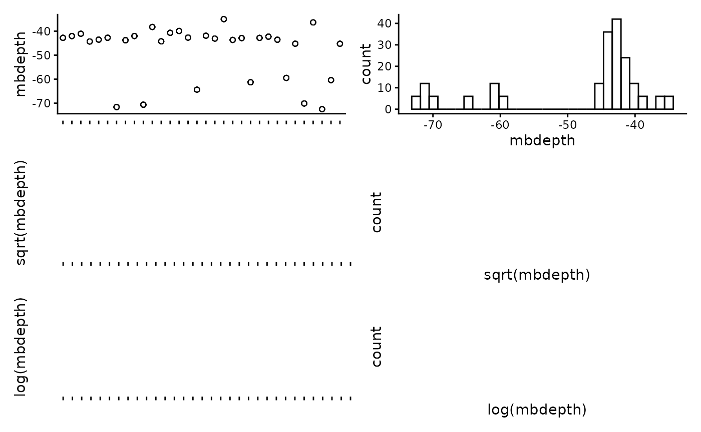
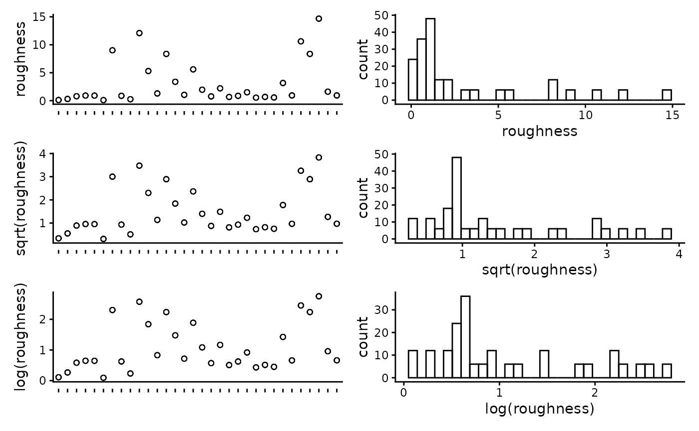
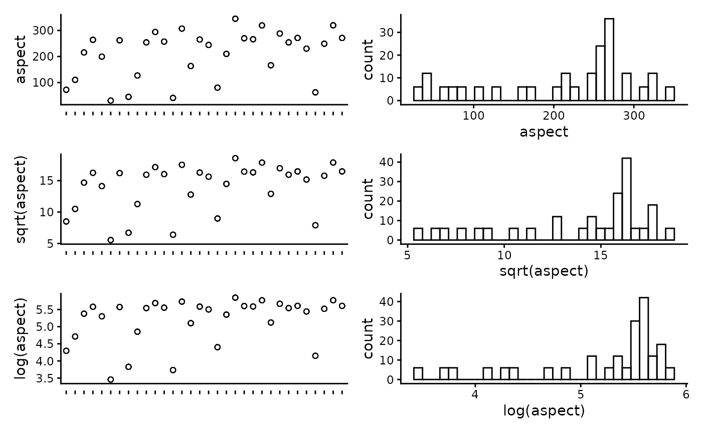
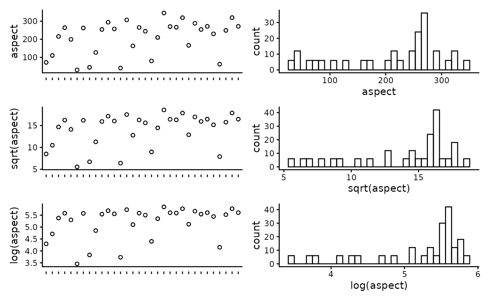
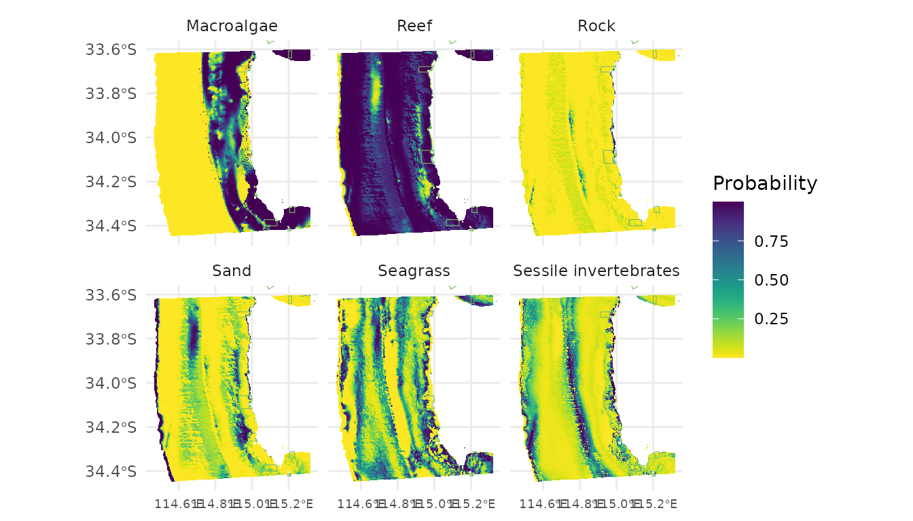

Generate spatial predictions of habitat using FSSgam
Claude Spencer & Brooke Gibbons
2023-11-13
habitat-modelling.RmdThis script takes the checked habitat data from the previous workflow steps, visualises the data and exports it into a format suitable for modelling. The exploratory visualisation of the data allows for trends and patterns in the raw data to be investigated.
R setup
Load libraries.
library(CheckEM)
library(tidyverse)
library(mgcv)
library(devtools)
library(FSSgam)
library(here)
library(ggplot2)
library(ggnewscale)
library(viridis)
library(terra)
library(sf)
library(patchwork)Set the study name.
name <- 'example-bruv-workflow'Load data
Load the habitat point annotation data.
dat <- readRDS(here::here(paste0("r-workflows/data/tidy/",
name, "_tidy-habitat.rds"))) %>%
glimpse()## Rows: 192
## Columns: 27
## $ campaignid <chr> "2023-03_SwC_stereo-BRUVs", "2023-03_SwC_s…
## $ sample <chr> "35", "35", "35", "35", "35", "35", "5", "…
## $ date_time <chr> "14/03/2023 23:36", "14/03/2023 23:36", "1…
## $ location <chr> NA, NA, NA, NA, NA, NA, NA, NA, NA, NA, NA…
## $ site <chr> NA, NA, NA, NA, NA, NA, NA, NA, NA, NA, NA…
## $ depth <chr> "39.6", "39.6", "39.6", "39.6", "39.6", "3…
## $ successful_count <chr> "Yes", "Yes", "Yes", "Yes", "Yes", "Yes", …
## $ successful_length <chr> "Yes", "Yes", "Yes", "Yes", "Yes", "Yes", …
## $ successful_habitat_forward <chr> "Yes", "Yes", "Yes", "Yes", "Yes", "Yes", …
## $ successful_habitat_backward <chr> "Yes", "Yes", "Yes", "Yes", "Yes", "Yes", …
## $ x <dbl> 114.9236, 114.9236, 114.9236, 114.9236, 11…
## $ y <dbl> -34.13155, -34.13155, -34.13155, -34.13155…
## $ longitude_dd <dbl> 114.9236, 114.9236, 114.9236, 114.9236, 11…
## $ latitude_dd <dbl> -34.13155, -34.13155, -34.13155, -34.13155…
## $ id <dbl> 63, 63, 63, 63, 63, 63, 64, 64, 64, 64, 64…
## $ mbdepth <dbl> -34.97151, -34.97151, -34.97151, -34.97151…
## $ slope <dbl> 0.1468434, 0.1468434, 0.1468434, 0.1468434…
## $ aspect <dbl> 209.89577, 209.89577, 209.89577, 209.89577…
## $ tpi <dbl> 0.4215345, 0.4215345, 0.4215345, 0.4215345…
## $ tri <dbl> 0.7555733, 0.7555733, 0.7555733, 0.7555733…
## $ roughness <dbl> 2.211193, 2.211193, 2.211193, 2.211193, 2.…
## $ detrended <dbl> -5.663174, -5.663174, -5.663174, -5.663174…
## $ total_points_annotated <dbl> 109, 109, 109, 109, 109, 109, 116, 116, 11…
## $ habitat <chr> "Macroalgae", "Seagrasses", "Sessile inver…
## $ number <dbl> 96, 1, 3, 1, 8, 101, 110, 6, 0, 0, 0, 116,…
## $ mean_relief <dbl> 3.034483, 3.034483, 3.034483, 3.034483, 3.…
## $ sd_relief <dbl> 1.1174831, 1.1174831, 1.1174831, 1.1174831…Set up data for modelling
Set the predictor variables.
names(dat)## [1] "campaignid" "sample"
## [3] "date_time" "location"
## [5] "site" "depth"
## [7] "successful_count" "successful_length"
## [9] "successful_habitat_forward" "successful_habitat_backward"
## [11] "x" "y"
## [13] "longitude_dd" "latitude_dd"
## [15] "id" "mbdepth"
## [17] "slope" "aspect"
## [19] "tpi" "tri"
## [21] "roughness" "detrended"
## [23] "total_points_annotated" "habitat"
## [25] "number" "mean_relief"
## [27] "sd_relief"
pred.vars <- c("mbdepth","roughness", "detrended",
"slope", "tpi", "aspect", "tri") Check for correlation of predictor variables and remove anything highly correlated (>0.95).
## mbdepth roughness detrended slope tpi aspect tri
## mbdepth 1.00 -0.66 -0.89 -0.65 0.03 -0.32 -0.59
## roughness -0.66 1.00 0.48 0.99 0.29 0.06 0.99
## detrended -0.89 0.48 1.00 0.47 0.00 0.39 0.42
## slope -0.65 0.99 0.47 1.00 0.29 0.06 0.99
## tpi 0.03 0.29 0.00 0.29 1.00 -0.02 0.35
## aspect -0.32 0.06 0.39 0.06 -0.02 1.00 0.04
## tri -0.59 0.99 0.42 0.99 0.35 0.04 1.00Plot the individual predictors to assess if any transformations are necessary. We suggest to only use transformations when absolutely necessary. In the example dataset, most of the response variables have relatively balanced distributions, and therefor we have left them untransformed.
plot_transformations(pred.vars = pred.vars, dat = dat)

 

Reset the predictor variables to remove any highly correlated variables and include any transformed variables.
pred.vars <- c("depth","roughness", "detrended",
"tpi", "aspect", "tri")Check to make sure response variables have less than 80% zeroes. Full-subset GAM modelling will produce unreliable results if your data is too zero inflated.
resp.vars.all = unique(as.character(dat$habitat))
resp.vars = character()
for(i in 1:length(resp.vars.all)){
temp.dat = dat[which(dat$habitat == resp.vars.all[i]),]
if(length(which(temp.dat$habitat == 0)) / nrow(temp.dat) < 0.8){
resp.vars = c(resp.vars, resp.vars.all[i])}
}
resp.vars ## [1] "Macroalgae" "Seagrasses" "Sessile invertebrates"
## [4] "Consolidated (hard)" "Unconsolidated (soft)" "reef"Add the directory to save model outputs, and set up the R environment for model selection.
Run the full subset model selection process
This loop has been adapted from @beckyfisher/FSSgam, and examples and documentation is available on GitHub and in Fisher, R, Wilson, SK, Sin, TM, Lee, AC, Langlois, TJ. A simple function for full-subsets multiple regression in ecology with R. Ecol Evol. 2018; 8: 6104–6113. https://doi.org/10.1002/ece3.4134
for(i in 1:length(resp.vars)){
print(resp.vars[i])
use.dat <- dat[dat$habitat == resp.vars[i],]
use.dat <- as.data.frame(use.dat)
Model1 <- gam(cbind(number, (total_points_annotated - number)) ~
s(mbdepth, bs = 'cr'),
family = binomial("logit"), data = use.dat)
model.set <- generate.model.set(use.dat = use.dat,
test.fit = Model1,
pred.vars.cont = pred.vars,
cyclic.vars = c("aspect"),
k = 5,
cov.cutoff = 0.7
)
out.list <- fit.model.set(model.set,
max.models = 600,
parallel = T)
names(out.list)
out.list$failed.models
mod.table <- out.list$mod.data.out
mod.table <- mod.table[order(mod.table$AICc), ]
mod.table$cumsum.wi <- cumsum(mod.table$wi.AICc)
out.i <- mod.table[which(mod.table$delta.AICc <= 2), ]
out.all <- c(out.all, list(out.i))
var.imp <- c(var.imp, list(out.list$variable.importance$aic$variable.weights.raw))
for(m in 1:nrow(out.i)){
best.model.name <- as.character(out.i$modname[m])
png(file = here::here(paste(outdir, m, resp.vars[i], "mod_fits.png", sep = "")))
if(best.model.name != "null"){
par(mfrow = c(3, 1), mar = c(9, 4, 3, 1))
best.model = out.list$success.models[[best.model.name]]
plot(best.model, all.terms = T, pages = 1, residuals = T, pch = 16)
mtext(side = 2, text = resp.vars[i], outer = F)}
dev.off()
}
}Save the model fits and importance scores.
names(out.all) <- resp.vars
names(var.imp) <- resp.vars
all.mod.fits <- list_rbind(out.all, names_to = "response")
all.var.imp <- do.call("rbind",var.imp)
write.csv(all.mod.fits[ , -2], file = here::here(paste0(outdir, name, "_all.mod.fits.csv")))
write.csv(all.var.imp, file = here::here(paste0(outdir, name, "_all.var.imp.csv")))Spatially predict the top model from the model selection process
Transform the habitat data into wide format for easy prediction.
widedat <- dat %>%
pivot_wider(values_from = "number", names_from = "habitat", values_fill = 0) %>%
clean_names() %>%
glimpse()## Rows: 32
## Columns: 31
## $ campaignid <chr> "2023-03_SwC_stereo-BRUVs", "2023-03_SwC_s…
## $ sample <chr> "35", "5", "26", "23", "29", "4", "32", "3…
## $ date_time <chr> "14/03/2023 23:36", "14/03/2023 23:49", "1…
## $ location <chr> NA, NA, NA, NA, NA, NA, NA, NA, NA, NA, NA…
## $ site <chr> NA, NA, NA, NA, NA, NA, NA, NA, NA, NA, NA…
## $ depth <chr> "39.6", "42.7", "36", "41", "42.6", "45", …
## $ successful_count <chr> "Yes", "Yes", "Yes", "Yes", "Yes", "Yes", …
## $ successful_length <chr> "Yes", "Yes", "Yes", "Yes", "Yes", "Yes", …
## $ successful_habitat_forward <chr> "Yes", "Yes", "Yes", "Yes", "Yes", "Yes", …
## $ successful_habitat_backward <chr> "Yes", "Yes", "Yes", "Yes", "Yes", "Yes", …
## $ x <dbl> 114.9236, 114.9292, 114.9284, 114.9190, 11…
## $ y <dbl> -34.13155, -34.12953, -34.12729, -34.12832…
## $ longitude_dd <dbl> 114.9236, 114.9292, 114.9284, 114.9190, 11…
## $ latitude_dd <dbl> -34.13155, -34.12953, -34.12729, -34.12832…
## $ id <dbl> 63, 64, 65, 66, 67, 68, 69, 70, 71, 72, 73…
## $ mbdepth <dbl> -34.97151, -36.35807, -40.68553, -38.25594…
## $ slope <dbl> 0.146843375, 0.812689749, 0.694289634, 0.4…
## $ aspect <dbl> 209.89577, 62.41434, 40.87387, 294.10675, …
## $ tpi <dbl> 0.42153454, 2.39535522, -0.67607403, 0.476…
## $ tri <dbl> 0.75557327, 3.29823494, 2.39221191, 1.8367…
## $ roughness <dbl> 2.21119308, 8.36493301, 8.36493301, 5.3012…
## $ detrended <dbl> -5.6631737, -7.0394716, -11.2637815, -8.69…
## $ total_points_annotated <dbl> 109, 116, 123, 68, 56, 58, 25, 14, 28, 39,…
## $ mean_relief <dbl> 3.034483, 3.900000, 4.000000, 3.555556, 4.…
## $ sd_relief <dbl> 1.1174831, 0.4472136, 0.0000000, 0.8555853…
## $ macroalgae <dbl> 96, 110, 105, 50, 28, 50, 7, 1, 16, 30, 57…
## $ seagrasses <dbl> 1, 6, 18, 11, 28, 6, 0, 1, 1, 9, 2, 4, 14,…
## $ sessile_invertebrates <dbl> 3, 0, 0, 7, 0, 2, 2, 0, 0, 0, 2, 0, 1, 0, …
## $ consolidated_hard <dbl> 1, 0, 0, 0, 0, 0, 3, 0, 0, 0, 0, 0, 0, 0, …
## $ unconsolidated_soft <dbl> 8, 0, 0, 0, 0, 0, 13, 12, 11, 0, 0, 0, 0, …
## $ reef <dbl> 101, 116, 123, 68, 56, 58, 12, 2, 17, 39, …Load the raster of bathymetry data and derivatives.
preds <- rast(here::here(paste0("r-workflows/data/spatial/rasters/",
name, "_bathymetry_derivatives.rds")))
plot(preds)
Transform the raster to a dataframe to predict onto.
preddf <- as.data.frame(preds, xy = TRUE, na.rm = TRUE) %>%
dplyr::mutate(depth = abs(mbdepth)) %>%
clean_names() %>%
glimpse()## Rows: 73,350
## Columns: 10
## $ x <dbl> 115.1714, 115.1739, 115.1764, 115.1789, 115.1814, 115.1839, …
## $ y <dbl> -33.60361, -33.60361, -33.60361, -33.60361, -33.60361, -33.6…
## $ mbdepth <dbl> -14.83014, -13.89184, -14.18757, -14.48647, -14.47323, -14.3…
## $ slope <dbl> 0.24350203, 0.19746646, 0.17799167, 0.18316828, 0.22091857, …
## $ aspect <dbl> 339.995240, 341.597571, 21.180346, 12.600024, 356.337121, 35…
## $ tpi <dbl> -3.721524e-01, 5.277313e-01, 1.502453e-01, -1.123428e-03, 9.…
## $ tri <dbl> 0.9656481, 0.8277034, 0.6934198, 0.6945946, 0.8081013, 0.902…
## $ roughness <dbl> 2.807414, 2.421717, 2.196986, 2.156502, 2.581898, 2.606502, …
## $ detrended <dbl> -2.871674, -2.161609, -2.683798, -3.207528, -3.417629, -3.56…
## $ depth <dbl> 14.83014, 13.89184, 14.18757, 14.48647, 14.47323, 14.39490, …Manually set the top model from the full subset model selection.
# Sessile invertebrates
m_inverts <- gam(cbind(sessile_invertebrates, total_points_annotated - sessile_invertebrates) ~
s(detrended, k = 5, bs = "cr") +
s(roughness, k = 5, bs = "cr") +
s(tpi, k = 5, bs = "cr"),
data = widedat, method = "REML", family = binomial("logit"))
summary(m_inverts)##
## Family: binomial
## Link function: logit
##
## Formula:
## cbind(sessile_invertebrates, total_points_annotated - sessile_invertebrates) ~
## s(detrended, k = 5, bs = "cr") + s(roughness, k = 5, bs = "cr") +
## s(tpi, k = 5, bs = "cr")
##
## Parametric coefficients:
## Estimate Std. Error z value Pr(>|z|)
## (Intercept) -2.6145 0.1877 -13.93 <2e-16 ***
## ---
## Signif. codes: 0 '***' 0.001 '**' 0.01 '*' 0.05 '.' 0.1 ' ' 1
##
## Approximate significance of smooth terms:
## edf Ref.df Chi.sq p-value
## s(detrended) 3.587 3.873 242.13 < 2e-16 ***
## s(roughness) 2.767 3.011 35.91 < 2e-16 ***
## s(tpi) 3.516 3.861 30.84 1.93e-06 ***
## ---
## Signif. codes: 0 '***' 0.001 '**' 0.01 '*' 0.05 '.' 0.1 ' ' 1
##
## R-sq.(adj) = 0.971 Deviance explained = 95.4%
## -REML = 70.308 Scale est. = 1 n = 32
plot(m_inverts, pages = 1, residuals = T, cex = 5)
# Rock
m_rock <- gam(cbind(consolidated_hard, total_points_annotated - consolidated_hard) ~
s(aspect, k = 5, bs = "cr") +
s(detrended, k = 5, bs = "cr") +
s(tpi, k = 5, bs = "cr"),
data = widedat, method = "REML", family = binomial("logit"))
summary(m_rock)##
## Family: binomial
## Link function: logit
##
## Formula:
## cbind(consolidated_hard, total_points_annotated - consolidated_hard) ~
## s(aspect, k = 5, bs = "cr") + s(detrended, k = 5, bs = "cr") +
## s(tpi, k = 5, bs = "cr")
##
## Parametric coefficients:
## Estimate Std. Error z value Pr(>|z|)
## (Intercept) -6.1469 0.6382 -9.632 <2e-16 ***
## ---
## Signif. codes: 0 '***' 0.001 '**' 0.01 '*' 0.05 '.' 0.1 ' ' 1
##
## Approximate significance of smooth terms:
## edf Ref.df Chi.sq p-value
## s(aspect) 3.610 3.881 14.619 0.005658 **
## s(detrended) 3.191 3.561 20.012 0.000264 ***
## s(tpi) 1.000 1.000 4.553 0.032883 *
## ---
## Signif. codes: 0 '***' 0.001 '**' 0.01 '*' 0.05 '.' 0.1 ' ' 1
##
## R-sq.(adj) = 0.889 Deviance explained = 83.6%
## -REML = 27.178 Scale est. = 1 n = 32
plot(m_rock, pages = 1, residuals = T, cex = 5)
# Sand
m_sand <- gam(cbind(unconsolidated_soft, total_points_annotated - unconsolidated_soft) ~
s(aspect, k = 5, bs = "cr") +
s(detrended, k = 5, bs = "cr") +
s(roughness, k = 5, bs = "cr"),
data = widedat, method = "REML", family = binomial("logit"))
summary(m_sand)##
## Family: binomial
## Link function: logit
##
## Formula:
## cbind(unconsolidated_soft, total_points_annotated - unconsolidated_soft) ~
## s(aspect, k = 5, bs = "cr") + s(detrended, k = 5, bs = "cr") +
## s(roughness, k = 5, bs = "cr")
##
## Parametric coefficients:
## Estimate Std. Error z value Pr(>|z|)
## (Intercept) -11.744 3.232 -3.634 0.000279 ***
## ---
## Signif. codes: 0 '***' 0.001 '**' 0.01 '*' 0.05 '.' 0.1 ' ' 1
##
## Approximate significance of smooth terms:
## edf Ref.df Chi.sq p-value
## s(aspect) 3.732 3.928 54.809 <2e-16 ***
## s(detrended) 3.646 3.914 92.895 <2e-16 ***
## s(roughness) 1.966 2.195 9.042 0.0161 *
## ---
## Signif. codes: 0 '***' 0.001 '**' 0.01 '*' 0.05 '.' 0.1 ' ' 1
##
## R-sq.(adj) = 0.867 Deviance explained = 83.1%
## -REML = 66.533 Scale est. = 1 n = 32
plot(m_sand, pages = 1, residuals = T, cex = 5)
# Seagrasses
m_seagrass <- gam(cbind(seagrasses, total_points_annotated - seagrasses) ~
s(aspect, k = 5, bs = "cr") +
s(detrended, k = 5, bs = "cr") +
s(roughness, k = 5, bs = "cr"),
data = widedat, method = "REML", family = binomial("logit"))
summary(m_seagrass)##
## Family: binomial
## Link function: logit
##
## Formula:
## cbind(seagrasses, total_points_annotated - seagrasses) ~ s(aspect,
## k = 5, bs = "cr") + s(detrended, k = 5, bs = "cr") + s(roughness,
## k = 5, bs = "cr")
##
## Parametric coefficients:
## Estimate Std. Error z value Pr(>|z|)
## (Intercept) -51.90 10.61 -4.894 9.9e-07 ***
## ---
## Signif. codes: 0 '***' 0.001 '**' 0.01 '*' 0.05 '.' 0.1 ' ' 1
##
## Approximate significance of smooth terms:
## edf Ref.df Chi.sq p-value
## s(aspect) 3.594 3.874 38.01 <2e-16 ***
## s(detrended) 3.876 3.977 46.87 <2e-16 ***
## s(roughness) 3.310 3.647 45.92 <2e-16 ***
## ---
## Signif. codes: 0 '***' 0.001 '**' 0.01 '*' 0.05 '.' 0.1 ' ' 1
##
## R-sq.(adj) = 0.668 Deviance explained = 83%
## -REML = 84.672 Scale est. = 1 n = 32
plot(m_seagrass, pages = 1, residuals = T, cex = 5)
# Macroalgae
m_macro <- gam(cbind(macroalgae, total_points_annotated - macroalgae) ~
s(mbdepth, k = 5, bs = "cr") +
s(detrended, k = 5, bs = "cr") +
s(tpi, k = 5, bs = "cr"),
data = widedat, method = "REML", family = binomial("logit"))
summary(m_macro)##
## Family: binomial
## Link function: logit
##
## Formula:
## cbind(macroalgae, total_points_annotated - macroalgae) ~ s(mbdepth,
## k = 5, bs = "cr") + s(detrended, k = 5, bs = "cr") + s(tpi,
## k = 5, bs = "cr")
##
## Parametric coefficients:
## Estimate Std. Error z value Pr(>|z|)
## (Intercept) 0.09879 0.08551 1.155 0.248
##
## Approximate significance of smooth terms:
## edf Ref.df Chi.sq p-value
## s(mbdepth) 2.454 2.922 130.02 < 2e-16 ***
## s(detrended) 1.000 1.000 15.81 7.01e-05 ***
## s(tpi) 3.595 3.878 58.72 < 2e-16 ***
## ---
## Signif. codes: 0 '***' 0.001 '**' 0.01 '*' 0.05 '.' 0.1 ' ' 1
##
## R-sq.(adj) = 0.768 Deviance explained = 80.5%
## -REML = 148.34 Scale est. = 1 n = 32
plot(m_macro, pages = 1, residuals = T, cex = 5)
# Reef
m_reef <- gam(cbind(reef, total_points_annotated - reef) ~
s(aspect, k = 5, bs = "cr") +
s(detrended, k = 5, bs = "cr") +
s(roughness, k = 5, bs = "cr"),
data = widedat, method = "REML", family = binomial("logit"))
summary(m_reef)##
## Family: binomial
## Link function: logit
##
## Formula:
## cbind(reef, total_points_annotated - reef) ~ s(aspect, k = 5,
## bs = "cr") + s(detrended, k = 5, bs = "cr") + s(roughness,
## k = 5, bs = "cr")
##
## Parametric coefficients:
## Estimate Std. Error z value Pr(>|z|)
## (Intercept) 11.744 3.232 3.634 0.000279 ***
## ---
## Signif. codes: 0 '***' 0.001 '**' 0.01 '*' 0.05 '.' 0.1 ' ' 1
##
## Approximate significance of smooth terms:
## edf Ref.df Chi.sq p-value
## s(aspect) 3.732 3.928 54.809 <2e-16 ***
## s(detrended) 3.646 3.914 92.895 <2e-16 ***
## s(roughness) 1.966 2.195 9.042 0.0161 *
## ---
## Signif. codes: 0 '***' 0.001 '**' 0.01 '*' 0.05 '.' 0.1 ' ' 1
##
## R-sq.(adj) = 0.867 Deviance explained = 83.1%
## -REML = 66.533 Scale est. = 1 n = 32
plot(m_reef, pages = 1, residuals = T, cex = 5)
Predict, rasterise and plot habitat predictions
preddf <- cbind(preddf,
"pmacro" = predict(m_macro, preddf, type = "response"),
"prock" = predict(m_rock, preddf, type = "response"),
"psand" = predict(m_sand, preddf, type = "response"),
"pseagrass" = predict(m_seagrass, preddf, type = "response"),
"pinverts" = predict(m_inverts, preddf, type = "response"),
"preef" = predict(m_reef, preddf, type = "response")) %>%
glimpse()## Rows: 73,350
## Columns: 16
## $ x <dbl> 115.1714, 115.1739, 115.1764, 115.1789, 115.1814, 115.1839, …
## $ y <dbl> -33.60361, -33.60361, -33.60361, -33.60361, -33.60361, -33.6…
## $ mbdepth <dbl> -14.83014, -13.89184, -14.18757, -14.48647, -14.47323, -14.3…
## $ slope <dbl> 0.24350203, 0.19746646, 0.17799167, 0.18316828, 0.22091857, …
## $ aspect <dbl> 339.995240, 341.597571, 21.180346, 12.600024, 356.337121, 35…
## $ tpi <dbl> -3.721524e-01, 5.277313e-01, 1.502453e-01, -1.123428e-03, 9.…
## $ tri <dbl> 0.9656481, 0.8277034, 0.6934198, 0.6945946, 0.8081013, 0.902…
## $ roughness <dbl> 2.807414, 2.421717, 2.196986, 2.156502, 2.581898, 2.606502, …
## $ detrended <dbl> -2.871674, -2.161609, -2.683798, -3.207528, -3.417629, -3.56…
## $ depth <dbl> 14.83014, 13.89184, 14.18757, 14.48647, 14.47323, 14.39490, …
## $ pmacro <dbl> 0.9994044, 0.9986021, 0.9991463, 0.9991944, 0.9991232, 0.999…
## $ prock <dbl> 0.007066725, 0.002316534, 0.032253187, 0.125768311, 0.005744…
## $ psand <dbl> 2.220446e-16, 2.220446e-16, 1.530496e-04, 1.067617e-04, 2.22…
## $ pseagrass <dbl> 0.63705545, 0.70420525, 0.45269763, 0.33056725, 0.72609061, …
## $ pinverts <dbl> 0.005092447, 0.005315867, 0.004900178, 0.005803717, 0.006133…
## $ preef <dbl> 1.0000000, 1.0000000, 0.9998470, 0.9998932, 1.0000000, 1.000…Tidy and save the final dataset
Create a column for the ‘dominant’ habitat
preddf$dom_tag <- apply(preddf %>% dplyr::select(pmacro, prock, psand, pseagrass, pinverts), 1,
FUN = function(x){names(which.max(x))})
glimpse(preddf)## Rows: 73,350
## Columns: 17
## $ x <dbl> 115.1714, 115.1739, 115.1764, 115.1789, 115.1814, 115.1839, …
## $ y <dbl> -33.60361, -33.60361, -33.60361, -33.60361, -33.60361, -33.6…
## $ mbdepth <dbl> -14.83014, -13.89184, -14.18757, -14.48647, -14.47323, -14.3…
## $ slope <dbl> 0.24350203, 0.19746646, 0.17799167, 0.18316828, 0.22091857, …
## $ aspect <dbl> 339.995240, 341.597571, 21.180346, 12.600024, 356.337121, 35…
## $ tpi <dbl> -3.721524e-01, 5.277313e-01, 1.502453e-01, -1.123428e-03, 9.…
## $ tri <dbl> 0.9656481, 0.8277034, 0.6934198, 0.6945946, 0.8081013, 0.902…
## $ roughness <dbl> 2.807414, 2.421717, 2.196986, 2.156502, 2.581898, 2.606502, …
## $ detrended <dbl> -2.871674, -2.161609, -2.683798, -3.207528, -3.417629, -3.56…
## $ depth <dbl> 14.83014, 13.89184, 14.18757, 14.48647, 14.47323, 14.39490, …
## $ pmacro <dbl> 0.9994044, 0.9986021, 0.9991463, 0.9991944, 0.9991232, 0.999…
## $ prock <dbl> 0.007066725, 0.002316534, 0.032253187, 0.125768311, 0.005744…
## $ psand <dbl> 2.220446e-16, 2.220446e-16, 1.530496e-04, 1.067617e-04, 2.22…
## $ pseagrass <dbl> 0.63705545, 0.70420525, 0.45269763, 0.33056725, 0.72609061, …
## $ pinverts <dbl> 0.005092447, 0.005315867, 0.004900178, 0.005803717, 0.006133…
## $ preef <dbl> 1.0000000, 1.0000000, 0.9998470, 0.9998932, 1.0000000, 1.000…
## $ dom_tag <chr> "pmacro", "pmacro", "pmacro", "pmacro", "pmacro", "pmacro", …Save final predictions
Set up for plotting
Load marine park data. The dataset used here is the 2022 Collaborative Australian Protected Areas Database, which is available for free download from https://fed.dcceew.gov.au/datasets/782c02c691014efe8ffbd27445fe41d7_0/explore. Feel free to replace this shapefile with any suitable dataset that is available for your study area.
marine.parks <- st_read(here::here("r-workflows/data/spatial/shapefiles/Collaborative_Australian_Protected_Areas_Database_(CAPAD)_2022_-_Marine.shp")) %>%
st_make_valid() %>%
dplyr::mutate(ZONE_TYPE = str_replace_all(ZONE_TYPE,"\\s*\\([^\\)]+\\)", "")) %>%
dplyr::filter(str_detect(ZONE_TYPE, "Sanctuary|National Park"), STATE %in% "WA") %>%
st_transform(4326) ## Reading layer `Collaborative_Australian_Protected_Areas_Database_(CAPAD)_2022_-_Marine' from data source `/home/runner/work/CheckEM/CheckEM/r-workflows/data/spatial/shapefiles/Collaborative_Australian_Protected_Areas_Database_(CAPAD)_2022_-_Marine.shp'
## using driver `ESRI Shapefile'
## Simple feature collection with 3775 features and 26 fields
## Geometry type: MULTIPOLYGON
## Dimension: XY
## Bounding box: xmin: 70.71702 ymin: -58.44947 xmax: 170.3667 ymax: -8.473407
## Geodetic CRS: WGS 84Set colours for habitat plotting.
unique(preddf$dom_tag)## [1] "pmacro" "pseagrass" "psand" "pinverts" "prock"
hab_fills <- scale_fill_manual(values = c(
"psand" = "wheat",
"pinverts" = "plum",
"pseagrass" = "forestgreen",
"pmacro" = "darkgoldenrod4"
), name = "Habitat")Plot the dominant habitats
Build plot elements and display.
ggplot() +
geom_tile(data = preddf, aes(x, y, fill = dom_tag)) +
hab_fills +
new_scale_fill() +
geom_sf(data = marine.parks, fill = NA, colour = "#7bbc63",
size = 0.2, show.legend = F) +
coord_sf(xlim = c(min(preddf$x), max(preddf$x)),
ylim = c(min(preddf$y), max(preddf$y))) +
labs(x = NULL, y = NULL, colour = NULL) +
theme_minimal()
Plot the individual habitat probabilities
Transform habitat predictions into long format for easy plotting with ggplot::facet_wrap.
indclass <- preddf %>%
pivot_longer(cols = starts_with("p"), names_to = "habitat",
values_to = "Probability") %>%
dplyr::mutate(habitat = case_when(habitat %in% "pinverts" ~ "Sessile invertebrates",
habitat %in% "pmacro" ~ "Macroalgae",
habitat %in% "prock" ~ "Rock",
habitat %in% "psand" ~ "Sand",
habitat %in% "pseagrass" ~ "Seagrass",
habitat %in% "preef" ~ "Reef")) %>%
glimpse()## Rows: 440,100
## Columns: 13
## $ x <dbl> 115.1714, 115.1714, 115.1714, 115.1714, 115.1714, 115.1714…
## $ y <dbl> -33.60361, -33.60361, -33.60361, -33.60361, -33.60361, -33…
## $ mbdepth <dbl> -14.83014, -14.83014, -14.83014, -14.83014, -14.83014, -14…
## $ slope <dbl> 0.2435020, 0.2435020, 0.2435020, 0.2435020, 0.2435020, 0.2…
## $ aspect <dbl> 339.99524, 339.99524, 339.99524, 339.99524, 339.99524, 339…
## $ tpi <dbl> -0.372152448, -0.372152448, -0.372152448, -0.372152448, -0…
## $ tri <dbl> 0.9656481, 0.9656481, 0.9656481, 0.9656481, 0.9656481, 0.9…
## $ roughness <dbl> 2.807414, 2.807414, 2.807414, 2.807414, 2.807414, 2.807414…
## $ detrended <dbl> -2.871674, -2.871674, -2.871674, -2.871674, -2.871674, -2.…
## $ depth <dbl> 14.83014, 14.83014, 14.83014, 14.83014, 14.83014, 14.83014…
## $ dom_tag <chr> "pmacro", "pmacro", "pmacro", "pmacro", "pmacro", "pmacro"…
## $ habitat <chr> "Macroalgae", "Rock", "Sand", "Seagrass", "Sessile inverte…
## $ Probability <dbl> 9.994044e-01, 7.066725e-03, 2.220446e-16, 6.370555e-01, 5.…Build plot elements for individual habitat probabilities.
ggplot() +
geom_tile(data = indclass, aes(x, y, fill = Probability)) +
scale_fill_viridis(option = "D", direction = -1) +
new_scale_fill() +
geom_sf(data = marine.parks, fill = NA, colour = "#7bbc63",
size = 0.2, show.legend = F) +
coord_sf(xlim = c(min(preddf$x), max(preddf$x)),
ylim = c(min(preddf$y), max(preddf$y))) +
labs(x = NULL, y = NULL, fill = "Probability") +
theme_minimal() +
facet_wrap(~habitat) +
theme(axis.text.x = element_text(size = 7))